Wie löse ich Matheaufgaben?
Flächenberechnungen
Sie sehen ein gelbes Eingabefeld und die
Schalter: Prüfen und Lösung.
Tragen Sie Ihr Ergebnis ein, prüfen Sie es
oder starten Sie eine Lösung.
Aufgabe 109
Wie groß ist der Durchmesser d eines Kreises mit einer Fläche von 30 cm2?
Aufgabe 110
Wie groß ist der Umfang U eines Kreises mit einer Fläche von 8 cm2?
U = cmAufgabe 111
Wie groß ist die schraffierte Fläche?
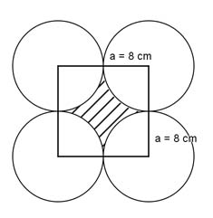
Aufgabe 112
Wie groß ist die schraffierte Fläche?
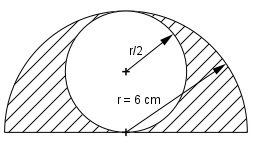
Sie ist cm2 groß.Aufgabe 113
AB ist durch T stetig geteilt. In welchem Verhältnis stehen A1, A2 und A3 zueinander?
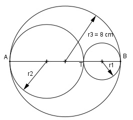
Aufgabe 114
Ein Kreisring hat einen inneren Radius von 5 cm
und eine Fläche von
12 cm2?
Wie groß ist der äußere Radius ra?
Aufgabe 115
Ein Kreisring hat eine Fläche von 40 cm2. Die Summe seiner Radien ergibt 20 cm. Wie groß ist der Innenradius ri?
Aufgabe 116
Ein Kreisring hat einen Außenradius von 12 cm. Er soll die gleiche Fläche wie sein Innenkreis haben. Wie groß ist der Innenradius ri?
ri = cmAufgabe 117
Die Seite eines gleichseitigen Dreiecks von 6 cm sei gleich dem Außenradius eines Kreisrings, seine Höhe gleich dem Innenradius. In welchem Verhältnis steht die Fläche des Kreisrings zur Fläche des Innenkreises?
Aufgabe 118
Ein rechteckiges Bauteil mit einer Länge von
24 cm und einer Breite von
15 cm soll durch ein
kreisrundes ersetzt werden.
Wie groß muss dessen Durchmesser d sein?
Aufgabe 119
Wie groß sind der Mittelpunktswinkel α und die Fläche A?
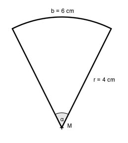
Aufgabe 120
Wie groß ist die schraffierte Fläche A?
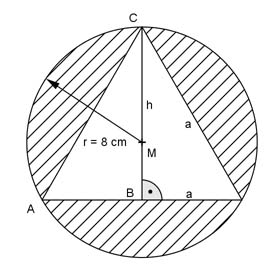
A = cm2Aufgabe 121
Wie groß ist die schraffierte Fläche A?
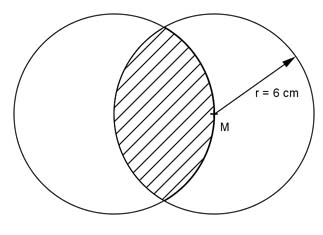
Aufgabe 122
Der Bogen b eines Kreissektors sei gleich dem Radius r = 4 cm des Kreises. Wie groß sind die Sektorfläche A und der Radius r1 eines Kreises, der dem Sektor flächengleich ist?
A = cm2Aufgabe 123
Wie groß ist die schraffierte Fläche A?
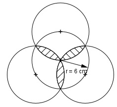
Aufgabe 124
Sektor und Segment eines Kreises seien flächengleich. Wie groß muss der Bogen b des Sektors sein, wenn der Bogen b1 des Segments 5 cm, die Bogenhöhe 1 cm und die Sehne 4 cm betragen?
b = cmAufgabe 125
Wie groß ist die schraffierte Fläche A?
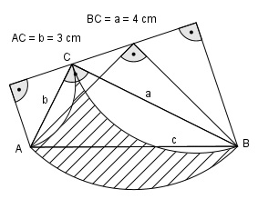
Aufgabe 126
Wie groß ist die schraffierte Fläche A?
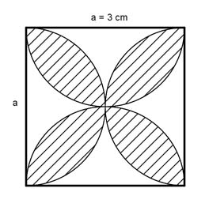
A = cm2Aufgabe 127
Wie groß ist die schraffierte Fläche A?
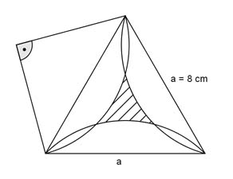
Aufgabe 128
Wie groß ist die rot umrandete Fläche A?
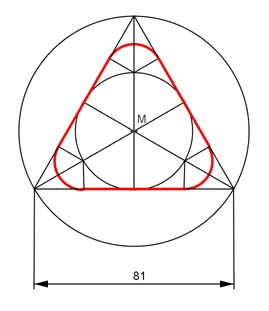
A = mm2Aufgabe 129
Wie groß ist der Umfang U?
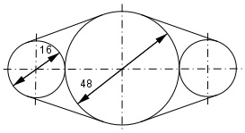
Aufgabe 130
Wie groß sind s und die Fläche A des Bauteils?
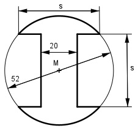
A = mm2Aufgabe 131
Wie groß sind der Winkel α und die Bögen b1 und b2?
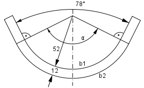
Aufgabe 132
Wie groß ist die schraffierte Fläche A?
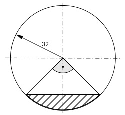
A = mm2Aufgabe 133
Wie groß ist die schraffierte Fläche A?
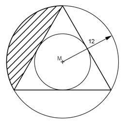
Aufgabe 134
Wie groß ist der Radius r der kleinen Kreise?
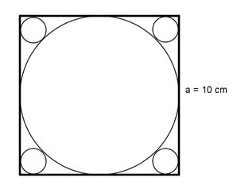
r = cmAufgabe 135
Wie groß ist der Radius r der kleinen Kreise?
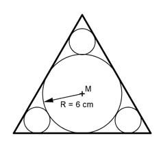
Aufgabe 136
Wie groß ist der Radius r?
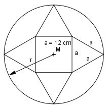
r = cmAufgabe 137
Wie groß ist der Radius r?
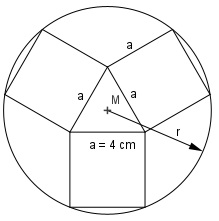
Aufgabe 138
Ein rechtwinkliges Dreieck hat die Fläche
A = 80 cm2. Eine Kathete verhält sich zur
Hypotenuse wie 3 : 5.
Wie lang sind die Dreieckseiten?
Aufgabe 139
Wie groß ist der Abfall in Prozent, wenn bei
einem Rechteck
(140 mm * 200 mm) die Ecken mit
einem Radius von 20 mm abgerundet werden?
zurück